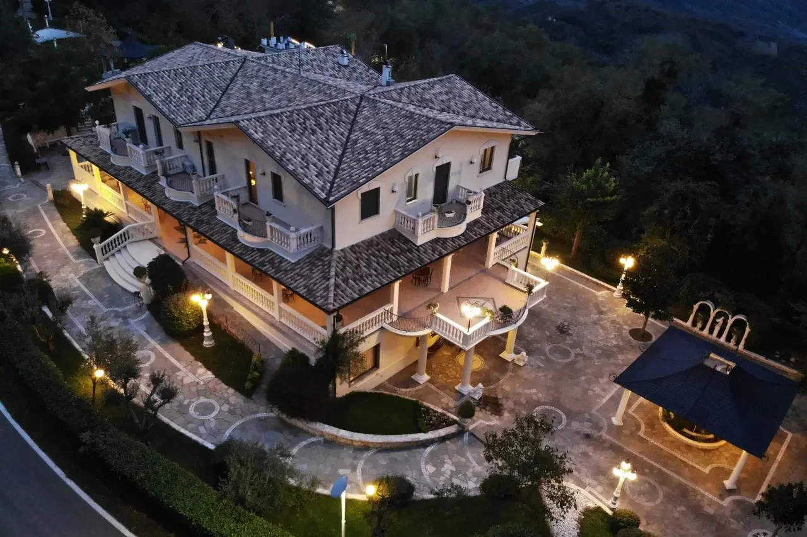
Un ristorante immerso nel giardino di una villa
Cucina italiana a Lettomanoppello, tra fontane, statue e grandi alberi. E un gazebo in giardino per i giorni da ricordare.
4,8 su Google · 17 recensioniIl ristorante
Sale luminose, tovaglie damascate e grandi finestre sul giardino. A Villa Anna si viene per un pranzo in famiglia, una cena tra amici o una tavolata di festa.
- Cucina
- Italiana
- Per i gruppi
- Sala privata
- Per i più piccoli
- Menù bambini
Per orari e prenotazioni chiamateci: 085 857 9011

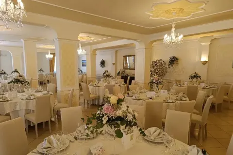
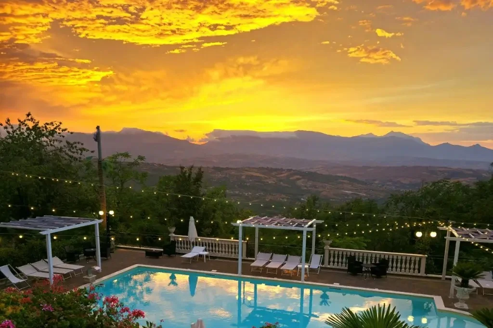
Il tramonto a bordo piscina
Dalla piscina lo sguardo arriva fino alle montagne. Al tramonto il cielo si accende di colori: è il momento più bello per un brindisi a bordo vasca.
-
Aperitivi al tramonto
Un calice in mano mentre il sole scende dietro le montagne.
-
Cerimonie a bordo piscina
L'arco di fiori, la torta e il brindisi degli sposi accanto all'acqua.
-
Feste sotto le luci
Quando scende la sera si accendono le luci sopra la piscina e la festa continua.
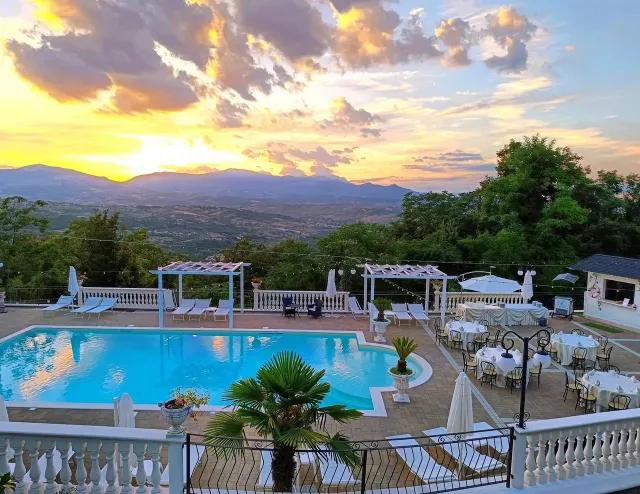
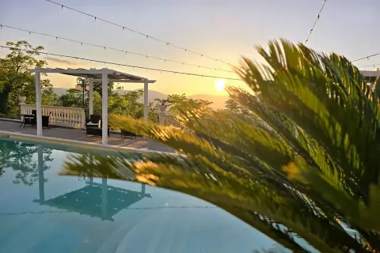
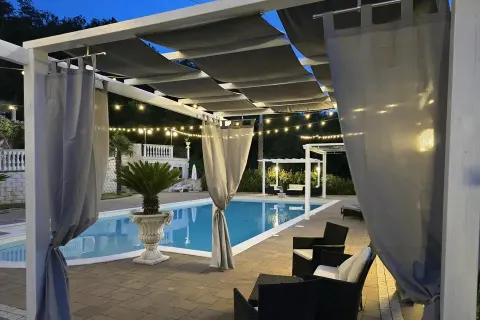
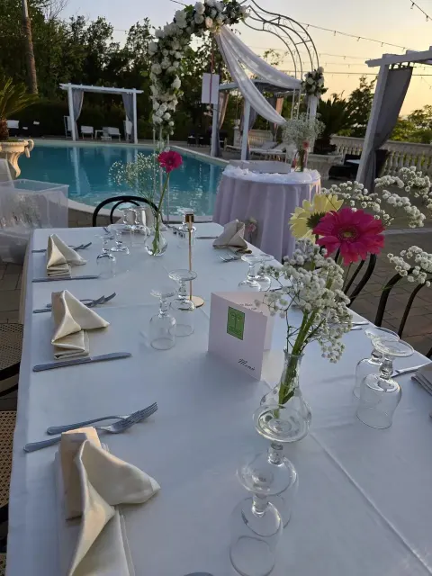
Eventi e cerimonie
Il rito nel gazebo in giardino, il ricevimento nelle sale della villa, la torta al momento del brindisi. A Villa Anna la festa ha tutto lo spazio che serve.
-
Matrimoni e cerimonie in giardino
Il sì sotto il gazebo, con il tappeto rosso, poi il ricevimento nelle sale della villa.
-
Comunioni e cresime
Un pranzo di festa per tutta la famiglia, con il giardino per le foto ricordo.
-
Battesimi
Una giornata serena per accogliere i più piccoli, con il menù pensato per i bambini.
-
Compleanni e diciottesimi
Dalla festa in famiglia ai diciotto anni, con la torta al centro della scena.
-
Lauree e anniversari
Un traguardo da festeggiare con le persone care, a tavola o in giardino.
-
Cene aziendali e di gruppo
La sala privata per cene di lavoro, ritrovi e tavolate tra amici.
Il giorno del vostro matrimonio
Il sì sotto il gazebo, le foto in giardino, il brindisi e il taglio della torta: tutta la giornata in un unico luogo, senza spostamenti.
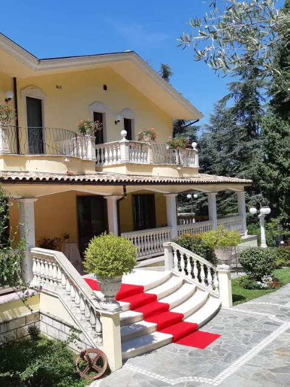

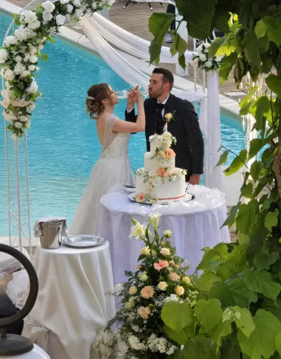
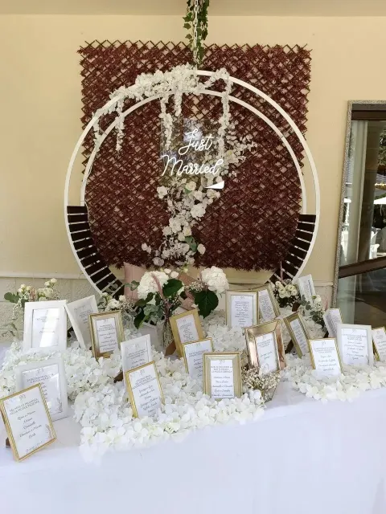
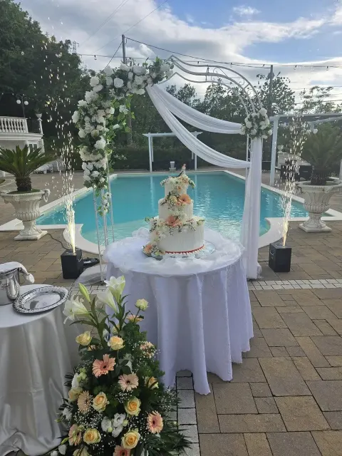
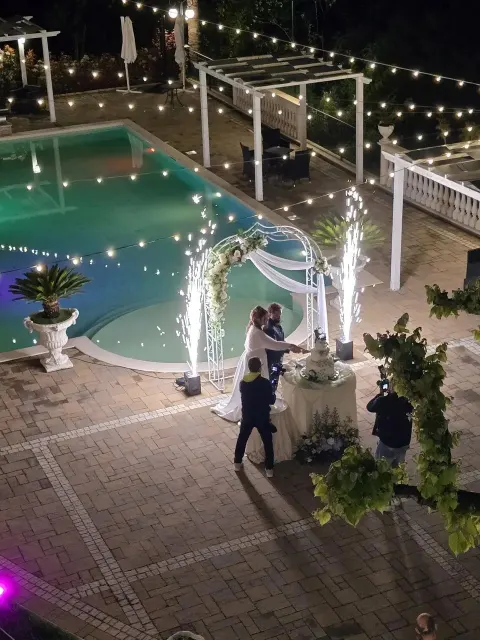
Cosa trovate a Villa Anna
-
Il gazebo per la cerimonia
In giardino, tra colonne e rose, con il tappeto rosso e le sedie vestite di bianco.
-
Il giardino con fontane e statue
Scalinate in pietra, archi fioriti e tanti angoli per le foto.
-
Sale eleganti
Tovaglie damascate, centrotavola di fiori e finestre sul verde.
-
Torte scenografiche
A più piani, con cigni, rose e decori in oro.
-
Sala privata
Per i gruppi che desiderano uno spazio tutto per sé.
La cucina e i buffet
Nelle cerimonie la tavola diventa parte della festa. Angurie intagliate a forma di rose, frutta composta come una scultura, buffet di pesce e crostacei, torte decorate con i fiori.
Ogni piatto e ogni buffet viene presentato con la stessa cura che mettiamo nell'allestimento delle sale. Tocca una foto per ingrandirla.
Come organizziamo il vostro evento
Quattro passaggi, dalla prima telefonata al giorno della festa.
-
Ci contattate
Chiamateci o compilate il modulo: diteci che evento avete in mente, la data e quanti sarete.
-
Visitate la villa e il giardino
Venite a vedere le sale, il gazebo e il giardino, per immaginare la giornata sul posto.
-
Scegliamo insieme menù e allestimento
Decidiamo con voi cosa servire a tavola e come preparare sale e giardino.
-
Il giorno della festa pensiamo a tutto noi
Voi pensate agli ospiti. Al resto pensiamo noi.

Il giorno più bello merita il posto più bello
Il giardino
Scalinate in pietra, fontane con le statue, archi fioriti e lampioni per la sera. Tocca una foto per ingrandirla.
Galleria
La piscina al tramonto, le sale, i buffet e le feste: Villa Anna in quindici foto. Tocca una foto per ingrandirla.
Domande frequenti
Non trovate la risposta che cercate? Chiamateci allo 085 857 9011.
Si può visitare la villa prima dell'evento?
Sì. Visitare le sale e il giardino fa parte del modo in cui organizziamo ogni evento. Chiamateci per fissare il giorno della visita.
Si può celebrare la cerimonia in giardino?
In giardino c'è un gazebo che viene allestito per le cerimonie, con il tappeto rosso e le sedie per gli ospiti. Per i dettagli sul vostro rito chiamateci.
Avete un menù per bambini?
Sì, il ristorante ha un menù per bambini.
C'è una sala privata?
Sì, c'è una sala privata per i gruppi. Chiamateci per verificare la disponibilità nella data che vi interessa.
Quanto costa?
Per gli eventi prepariamo un preventivo su misura: compilate il modulo o chiamateci. Per il ristorante chiamateci allo 085 857 9011.
Quanti ospiti potete accogliere?
Dipende dal tipo di evento e da come vengono allestiti sale e giardino. Chiamateci e ne parliamo insieme.
Come si prenota?
Per un tavolo al ristorante chiamate lo 085 857 9011. Per un evento potete chiamare o compilare il modulo per il preventivo.
Quali sono gli orari?
Per orari e prenotazioni chiamateci allo 085 857 9011.

Vi aspettiamo in villa
Richiedi un preventivo per il tuo evento
Raccontaci cosa state festeggiando, quando e quanti sarete. Vi ricontatteremo per parlarne insieme.
Preferite parlarne a voce? Chiamate lo 085 857 9011.
Preferite WhatsApp?
Scriveteci su WhatsAppRichiesta inviata!
Vi ricontatteremo al più presto. Ecco il riepilogo della vostra richiesta:
Per qualsiasi necessità potete chiamarci allo 085 857 9011.
Contatti e dove siamo
Chiamateci, saremo felici di accogliervi
085 857 9011Per orari e prenotazioni chiamateci. Su WhatsApp ci trovate al 349 407 8359.
Dove siamo
Via Provinciale per Scafa65020 Lettomanoppello (PE) 4,8 su Google · 17 recensioni